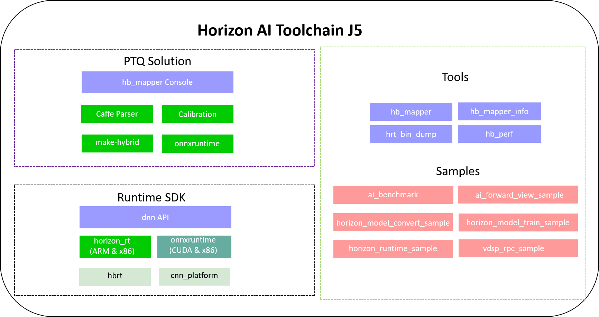

1. 产品介绍
1.1. 工具链概览
地平线J5芯片工具链（以下简称 工具链）是一套完整的边缘AI算法落地解决方案，可以帮助您把浮点模型量化为定点模型， 并在地平线AI芯片上快速部署自研算法模型。
目前在GPU上训练的模型大部分都是浮点模型，即参数使用的是float类型存储。 地平线BPU架构的AI芯片使用的是int8的计算精度（业内AI芯片的通用精度），能运行定点量化模型。 那么从训练出的浮点精度转为定点模型的过程，我们叫做量化。 同时模型量化后能够有效减少模型大小，加速深度学习推理的速度，因此也在学术界和工业界的广泛研究和应用。
量化方法为：
后量化（即：Post-training Quantization，浮点定点转换方案 ）：先训练浮点模型，然后使用校准图片计算量化参数，将浮点模型转为量化模型。该方法简单、快捷，但将浮点模型直接转为量化模型难免会有一些量化损失，地平线浮点转换工具链中提供的后量化工具能做到80%以上的模型量化误差小于1%。
PTQ方法支持通过公开DL框架获得的浮点模型（Caffe模型或ONNX模型）。 这种方法过程简单，不需要在训练阶段考虑量化问题。
有关PTQ方案的详细信息请阅读 PTQ浮点定点模型转换方案 章节。
工具链由PTQ模型后量化转换和嵌入式编译等部分组成，其软件逻辑框图如下：
其中：
Runtime SDK 提供了异构模型的运行库支持，运行库包含arm和x86(暂未提供)两个部分，分别用于在地平线AI芯片平台和X86仿真平台执行异构模型。 有关runtime应用开发请阅读 runtime应用开发 章节。
此外，工具链提供了丰富的开发 工具、示例 以及内置了大量算法模型的 模型发布物 帮助用户上手理解, 并可以提高用户的开发效率。
1.2. 工具链使用流程
J5 AI芯片工具链的整体使用流程如下图所示：

如上图所示，步骤2中的PTQ方案可完成模型量化。
下一章内容将为您介绍如何搭建开发环境。